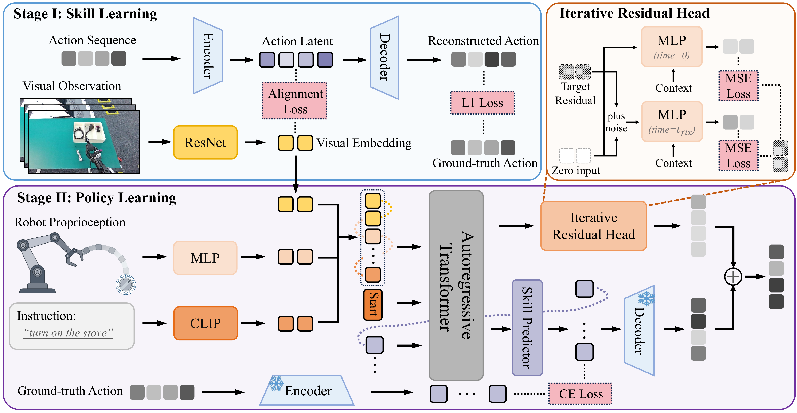

ARP: Enhancing Quantized Skill Abstractions via Visual Alignment and Iterative Refinement for Robotic Manipulation
1,2Soochow University · 3China Jiliang University · 4Tongji University · 5Leju Robotics
*Corresponding authors
Video
Abstract
Learning visuomotor policies for long-horizon manipulation remains a fundamental challenge. Recent skill-based imitation learning methods based on discrete quantization have shown promising results by representing complex behaviors as temporally extended skills. However, most existing approaches primarily encode action trajectories into latent skills, yielding weak visual-semantic grounding and limiting the ability to leverage visual observations for skill selection. Moreover, discrete tokenization inevitably incurs precision errors during continuous action generation. To alleviate these issues, we propose Aligned Refinement Policy (ARP), a discrete-skill framework that couples semantic grounding with execution-level refinement. Specifically, ARP introduces (i) a visual-action alignment objective that contrastively aligns visual embeddings with pre-quantized action representations in a shared latent space while preserving a state-independent skill decoder, and (ii) a lightweight Iterative Residual Head (IRH) that performs a two-step refinement to recover fine-grained control for precise execution. Extensive experiments show that ARP achieves state-of-the-art performance on the LIBERO and Meta-World benchmarks. Moreover, real-robot experiments on the Kuavo 4 Pro humanoid platform further validate its effectiveness, yielding consistent performance gains over several baselines on two challenging manipulation tasks.
ARP Pipeline

Results
LIBERO Overall Performance
Baselines marked with † are cited from original papers. Success Rate (%).
| Method | LIBERO-Object | LIBERO-Spatial | LIBERO-Goal | LIBERO-Long | LIBERO-90 | Overall |
|---|---|---|---|---|---|---|
| Octo† | 85.7 ±0.9 | 78.9 ±1.0 | 84.6 ±0.9 | 51.1 ±1.3 | -- | 75.1 ±0.6 |
| OpenVLA† | 88.4 ±0.8 | 84.7 ±0.9 | 79.2 ±1.0 | 53.7 ±1.3 | -- | 76.5 ±0.6 |
| TraceVLA† | 85.2 ±0.4 | 84.6 ±0.2 | 75.1 ±0.3 | 74.8 ±1.0 | -- | 74.8 ±0.5 |
| SpatialVLA† | 89.9 ±0.7 | 88.2 ±0.5 | 78.6 ±0.6 | 55.5 ±1.0 | -- | 78.1 ±0.7 |
| ResNet-T | 43.4 ±0.8 | 82.1 ±0.7 | 83.8 ±1.6 | 49.0 ±2.9 | 83.7 ±0.9 | 68.4 ±0.6 |
| Diffusion Policy | 78.2 ±0.6 | 71.9 ±0.9 | 73.6 ±2.8 | 45.8 ±4.3 | 74.6 ±0.8 | 68.8 ±0.4 |
| ACT | 58.6 ±0.6 | 77.9 ±2.7 | 70.3 ±3.5 | 48.0 ±2.6 | 55.3 ±1.1 | 62.0 ±1.7 |
| MGP | -- | -- | -- | 77.0 | 88.9 | -- |
| VQ-BeT | 77.1 ±2.7 | 84.0 ±0.8 | 64.8 ±0.4 | 59.7 ±0.4 | 81.8 ±0.5 | 73.5 ±0.5 |
| QueST | 80.7 ±1.5 | 79.5 ±0.7 | 81.0 ±1.0 | 70.0 ±0.8 | 86.2 ±0.5 | 79.5 ±0.4 |
| ARP (Ours) | 92.8 ±1.2 | 91.6 ±0.2 | 88.8 ±0.2 | 83.6 ±0.2 | 91.0 ±0.6 | 89.6 ±0.2 |
Meta-World Performance
Success Rate (%).
| Methods | Easy (28) | Medium (11) | Hard (6) | Very Hard (5) | Avg. SR |
|---|---|---|---|---|---|
| DP | 83.6 | 31.1 | 10.8 | 26.6 | 38.0 |
| DP3 | 90.9 | 61.6 | 38.0 | 49.0 | 59.9 |
| CP | 91.2 | 62.7 | 40.0 | 51.0 | 61.2 |
| FlowPolicy | 90.2 | 63.0 | 39.2 | 36.0 | 57.1 |
| MGP | 92.0 | 65.0 | 44.0 | 53.8 | 63.7 |
| ARP (Ours) | 91.5 | 71.3 | 65.8 | 67.9 | 73.8 |
ARP couples visual-action alignment with lightweight iterative refinement, improving long-horizon robotic manipulation across simulation benchmarks and real-world Kuavo 4 Pro tasks.